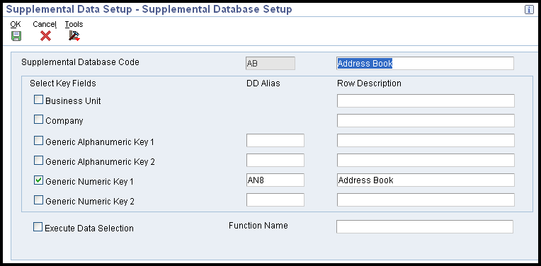
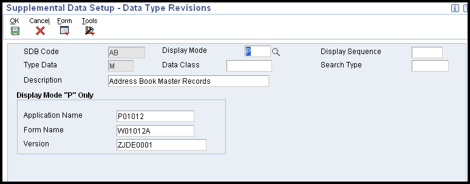
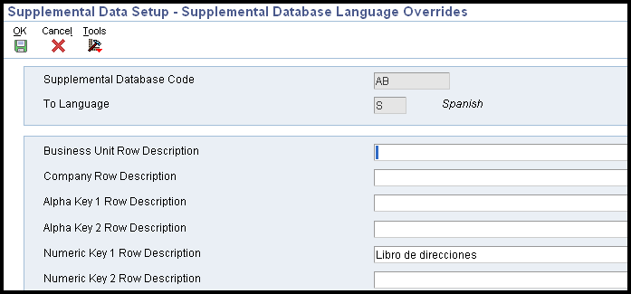
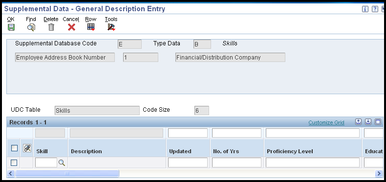

You can use Supplemental Data to track and store information that is not included in the standard master tables in JD Edwards EnterpriseOne software.
JD Edwards EnterpriseOne provides one supplemental database for each of the following systems:
Address Book
General Accounting
Job Cost
Fixed Assets
Human Capital Management
Payroll
Equipment/Plant Management
Work Orders
Inventory Management
You can set up databases in addition to those provided by JD Edwards EnterpriseOne. For each supplemental database, you can create one or more data types to organize your information. After you set up your database and data types, you can enter and use supplemental data.
Information for supplemental database codes is stored in the following tables:
Supplemental Database Setup (F00090)
Supplemental Database Data Types (F00091)
Supplemental Data (F00092)
Scope
This document is intended for users setting up supplemental data in EnterpriseOne.
Details
Supplemental Data Type Codes and Formats
Depending on your requirements, you can set up supplemental data type codes using any of the following formats:
Narrative Format - Enables you to enter information in free-form text.
Message Format - Similar to narrative format, plus allows you to exit directly to a form and enter narrative information about the data type.
Code Format - Allows you to customize the form on which you enter supplemental data. You can customize column headings that appear on the data entry form. You can attach a User Defined Code (UDC) table to each supplemental data type that uses the code format. You can use existing UDC tables or create new ones. When you create new tables, you must use system codes ranging from 55 to 59, inclusive, to protect the table from being overwritten during a reinstall process. To enter text, you can add an attachment to data types that use the code format.
Program format - Allows you to access a specific program and version number from the Supplemental Data program (P00092). Instead of customizing menus, set up supplemental data types that use program formats to access the forms that you use most often. You can then access the forms from a single menu selection, which saves time and streamlines data entry tasks.
Note - The system stores supplemental data type codes in the Supplemental Data table (F00092). The system stores supplemental narrative text as generic text attachments.
Setting Up Supplemental Data Types
To use the supplemental database, you must set up data type code tables before you set up data types so that the system can validate code information. You use the Supplemental Data Setup program (P00091) to set up data types as follows:
Set up the address book database. Set up the data types and specify the format for each data type. Formats can be narrative, code, or program. You can set up six data types in code format, two in narrative format, and one in program format.
Specify key fields and customize column headings for your data types.
Set up additional supplemental databases for the Address Book system. If you do not organize your data by data types, you can set up additional supplemental databases. For each supplemental database, you can create one or more data types to organize your information.
After you set up your database and data types, you can use the Supplemental Data program (P00092) to enter supplemental information.
To set up a supplemental database code

Navigate to Supplemental Data Setup (P00091).
On Work With Supplemental Database Setup, click Add.
On Supplemental Database Setup, complete the following fields:
Supplemental Database Code
Description
Key fields limit the data that you can search on when you enter supplemental data using the Supplemental Data program (P00092). To specify a key field, turn on one or more of the following options:
Business Unit
Company
Generic Alphanumeric Key 1
Generic Alphanumeric Key 2
Generic Numeric Key 1
Generic Numeric Key 2
Complete the following fields for each key field you turn on:
DD Alias
Row Description - To override the data dictionary name for a DD alias, enter a value in the Row Description field that corresponds with the key field. The name that you enter in this field appears in the Supplemental Data program as a key field.
Click OK. The system updates the UDC table (00/SD) with the new database code.
To set up a supplemental data type code using the narrative format
Navigate to Supplemental Database Setup (P00091).
On Work With Supplemental Database Setup, click Find to display existing database codes.
Choose the database code for which you want to define a narrative data type, and then choose Work With Data Typ (Work with Data Types) from the Row menu.
On Work With Data Types, click Add.
On Data Type Revisions, type N (narrative) in the following field:
Display Mode
Complete the following fields:
Type Data
Description
Complete the following optional fields:
Data Class
Display Sequence
Search Type
Leave the remaining fields blank for narrative supplemental data types.
Click OK.
To set up a supplemental data type code using the code format
Navigate to Supplemental Database Setup (P00091).
On Work With Supplemental Database Setup, click Find to display existing database codes.
Choose the database code for which you want to define a code data type, and then choose Work With Data Typ (Work with Data Types) from the Row menu.
On Work With Data Types, click Add.
On Data Type Revisions, type C (code) in the following field:
Display Mode
Complete the following fields:
Type Data
Description
Complete the following optional fields:
Display Sequence
Data Class
Search Type
To customize the column heading for user defined codes that appears on the General Description Entry form, complete the following field in the UDC Headings/Validation group box:
UDC
To attach a user defined code table to the UDC field, complete the following fields:
Product Code
Record Type
To customize the column headings for remarks that appear on the General Description Entry form, complete the following fields in the Remark Headings/Validation group box:
Remark 1
Remark 2
The Remark 3 field is used by the Demand Scheduling system only.
To attach the Remark fields to a record type, complete the following corresponding fields:
System Code
Record Type
To customize the column headings that appear on the General Description Entry form, complete the following fields in the Column Headings group box:
Amount 1
Amount 2
Quantity
Effective From
Effective Thru
User Date
User Days
User Address
User Document
The User Time field is used by the Demand Scheduling system only.
Click OK.
To set up a supplemental data type code using the program format

Navigate to Supplemental Database Setup (P00091).
On Work With Supplemental Database Setup, click Find to display existing database codes.
Choose the database code for which you want to define a program data type, and then choose Work With Data Typ (Work With Data Types) from the Row menu.
On Work With Data Types, click Add.
On Data Type Revisions, enter P (program) in the following field:
Display Mode
Complete the following field:
Type Data
Complete the following optional fields:
Data Class
Display Sequence
Search Type
Description
Click OK to display the fields described in the next step.
To specify the program that you want this data type to access, complete the following fields in the Display Mode “P” Only group box:
Application Name
Form Name
Version
Click OK.
To set up a language override

Navigate to Supplemental Database Setup (P00091).
On Work With Supplemental Database Setup, choose Work With Language Preferences from the Form menu.
On Work With Language Overrides, click Add.
On Supplemental Database Language Overrides, complete the following fields:
Supplemental Database Code
Language
Complete any of the following optional fields:
Business Unit Row Description
Company Row Description
Alpha Key 1 Row Description
Alpha Key 2 Row Description
Numeric Key 1 Row Description
Numeric Key 2 Row Description
Click OK.
Entering Supplemental Data
After you set up the supplemental database and data types for your system, you can enter supplemental data. Supplemental data is used to track information that is not included in the EnterpriseOne standard master tables. It can include detailed information about job sites (business units), such as legal descriptions, ground conditions, and so on.
Emergency contacts
Employees
Job skills
Work history
When you set up your system, you set up the types of supplemental data that you want to track. For each data type, you specify the narrative, code, or program format in which you want to track information.
Prerequisites
For the Address Book system data types to appear on the CIF Supplemental Data menu (G01312), enter AB in the Supplemental Database Code processing option for the Supplemental Data program (P00092). Be sure to specify whether you are using effective dates in the processing option for the Supplemental Data program.
To enter supplemental data in the narrative format
Navigate to Supplemental Data (P00092)
On Work With Supplemental Data, review the following field to verify that you are using the correct code:
Supplemental Database Code - The system updates this field and displays key fields based on the database code that you specified in the processing option for the Supplemental Data program (P00092). The system displays the available types of supplemental data. The value N in the Data Mode column indicates that the data type is in narrative format. The system displays a paper clip icon to the left of each row that contains narrative text.
Depending on the supplemental database code that you are using, complete one of the following fields and click Find:
Address Number
Item Number
Branch/Plant
Business Unit
Choose a record in the detail area that contains N (narrative) in the Data Mode column and click Select.
On Media Objects, choose New and then Text from the File menu.
Enter the text.
From the File menu, choose Save & Exit.
To enter supplemental data in the code format
Navigate to Supplemental Data (P00092)
On Work With Supplemental Data, review the following field to verify that you are using the correct code:
Supplemental Database Code - The system updates this field and displays key fields based on the database code that you specified in the processing option for the Supplemental Data program (P00092). The system displays the available types of supplemental data. C in the Data Mode column indicates that the data type is in code format. A check mark in the row header of a data type indicates that a code format exists for that data type.
Depending on the supplemental database code that you are using, complete one of the following fields and click Find:
Address Number
Item Number
Branch/Plant
Business Unit
Choose a record in the detail area that contains C (code) in the Data Mode column and click Select. The column headings and fields in the detail area vary, based on the setup for each data type.
On General Description Entry, complete the following fields if your data type is associated with a user defined code table:
User Def Code
Effective Date
Complete the fields that apply to the data type, which might include the following:
User Defined Amount
Remark
Remarks Line 2
User Defined Amount #2
Addl Date
Ending Date - If you leave the Ending Date field blank and you specified in a processing option for the Supplemental Data program that the system assign an ending date when you leave this field blank, the system uses the ending effective date from the Address by Date table (F0116).
User Def Days
Click OK.

Note: Oracle recommends that you use the Supplemental Data Setup program (P00091) to add or change information that is associated with the fields in the UDC Headings/Validation and Remark Headings/Validation areas of the Data Type Revisions form. If you change information using the Supplemental Data program (P00092) instead, the next time that you view the record, the system will issue an error because it is using another UDC table to validate the data.
To access supplemental data in the program format
Navigate to Supplemental Data (P00092)
On Work With Supplemental Data, review the following field to verify that you are using the correct code:
Supplemental Database Code - The system populates this field and displays key fields based on the database code specified in the processing option for the Supplemental Data program (P00092).The system displays the available types of supplemental data. P in the Data Mode column indicates that the data type is in program format.
Choose a row in the detail area that contains P (program) in the Data Mode column and click Select. The system displays the program and form that you identified when you set up the program format for the data type.
Copying Supplemental Data Types
To save time and reduce data entry errors, you can copy supplemental data to other records. For example, to enter supplemental data for an Address Book number that is similar to an existing Address Book number, you can copy information from one record to another record. After you copy the data, you can revise it as necessary. When you copy supplemental data, follow these guidelines:
Copy supplemental data that is in code format only. You cannot copy narrative text.
Copy information from one data type to another data type in code format. For example, if you have a data type in code format for skills and another data type in code format for professional licenses, you can copy one employee's skills information into another employee's professional licenses data type.
Copy supplemental data only within the same supplemental database code. For example, suppose that you have two Address Book supplemental database codes: AB and SU. Within database code AB, you can copy information from one data type to another data type.
However, if you have information in database AB that you also want in database SU, you must manually enter the information in both databases.
To copy a supplemental data type navigate to Supplemental Data (P00092)
On Work With Supplemental Data, review the following field to verify that you are using the correct code:Supplemental Database Code. The system updates this field and displays key fields based on the database code that you specified in the processing option for the Supplemental Data program (P00092).
Complete one or more of the following applicable fields and click Find:
Item Number
Branch/Plant
Business Unit
Address Number
In the detail area, choose the record that contains the supplemental data type that you want to copy and click Copy.
On General Description Entry, complete one of the following applicable fields and click OK:
Item Number
Branch/Plant
Business Unit
Address Number
Reviewing Supplemental Data
You can review supplemental data in various formats. For example, you can review supplemental data by data type to review a specific type of supplemental data for multiple business units such as job sites in the Western region of the United States. You can also review supplemental data by item to review the master information about an item and the supplemental information with which it is associated, such as the information for a work order. Two tabs appear on the Work With Supplemental Data Profiles (Key1) and Work With Supplemental Data Profiles (MCU/Key1) forms. Each of the following tabs represents a different order in which the system sorts and displays the columns in the detail area of the form:
Data Type Sort first by data type, and then by short item number.
Item Number Sort by short item number, and then by data type.
You can rearrange the order in which the system displays the columns in the detail area. You can also save your changes as a new format. As you add formats to the form, the system adds tabs with the names that you assign the formats.
To review supplemental data navigate to Work with Supplemental Data Profiles (P00620)
On Work With Supplemental Data, Work With Supplemental Data Profiles (Key 1), or Work With Supplemental Data Profiles (MCU/Key1), complete one of the following fields:
Item Number
Type Data
To further limit your search, complete any of the fields in the Query By Example (QBE) row.